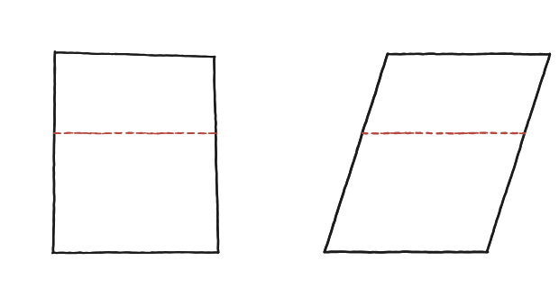
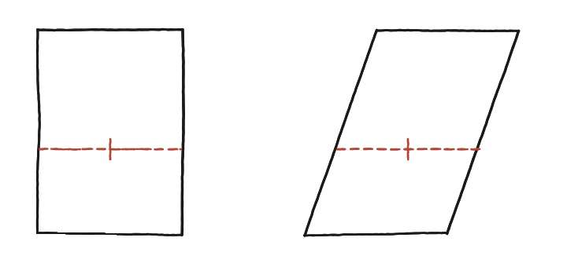

Pots idear un principi de Cavalieri per a àrees en el pla?

Pots idear un principi de Cavalieri per a àrees en el pla?
Inclinar sense canviar l'àrea?
Un rectangle es pot deformar en un paral·lelogram desplaçant-ne la part de dalt cap al costat, mantenint sempre la mateixa alçada. Visualment sembla que la figura "s'allarga" en fer-se obliqua —però l'àrea real, canvia de debò?
Mirar el tall, no la figura sencera
En lloc de comparar les dues figures senceres, es compara el tall horitzontal que fa cadascuna a la mateixa alçada: un segment concret, no tota la superfície.

El mateix tall, a qualsevol alçada
A qualsevol alçada que es triï, el tall horitzontal del paral·lelogram té exactament la mateixa longitud que la base —igual que el rectangle. La inclinació desplaça el tall cap a un costat, però no en canvia la mida.

Del tall igual a l'àrea igual
Si dues figures tenen el mateix tall a cada alçada, la seva àrea —que no és res més que la suma de tots aquests talls, un per cada alçada— ha de ser la mateixa. Aquest és el principi de Cavalieri per a àrees en el pla: no cal comparar les figures senceres, n'hi ha prou de comparar-ne els talls a cada alçada.
Un rectangle i un paral·lelogram amb la mateixa base i alçada tenen sempre la mateixa àrea, sigui quina sigui la inclinació, perquè el tall horitzontal a qualsevol alçada té la mateixa longitud als dos. Aquest és el principi de Cavalieri per a àrees: si dues figures tenen el mateix tall a cada alçada, tenen la mateixa àrea.
Comprovació
Rectangle de base 6, alçada 4: àrea 24. Paral·lelogram amb la mateixa base i alçada, inclinat 3 unitats: descomponent-lo en el rectangle més un triangle petit a un costat menys el mateix triangle a l'altre (que es cancel·len exactament), l'àrea es queda en 24.